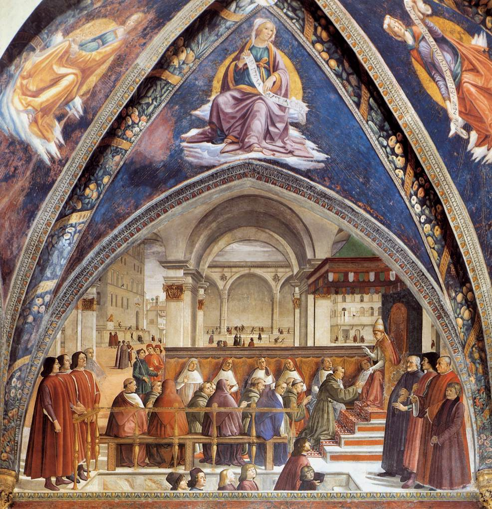

Explore the Confirmation of the Franciscan Rule

Look closely
At the bottom of the fresco, follow the staircase that seems to open onto the square. Figures are coming up the steps. You can follow them towards the Florentine group on the right and then look up to Francis and the pope at the centre.
Details to mark on the fresco
- Poliziano. At the foot of the scene, where the stairs open onto the square, find the adult leading the young Medici.
- Lorenzo de’ Medici. In the right foreground, look for the profile with the flattened nose, on the side nearest the staircase.
- Francesco Sassetti. Further to the right in the same group, find the man dressed in red beside the young boy.
- Francis and the pope. Beneath the arches at the centre, find Francis kneeling before the seated pope.
Understanding · Florence witnesses the ceremony
The approval of the Franciscan Rule takes place in Rome. Through the arches, Ghirlandaio lets you recognise Florence’s Piazza della Signoria, with the Palazzo Vecchio and the Loggia dei Lanzi. The staircase connects the arriving figures to the level of the ceremony. In the chapel Sassetti commissioned, his family and the Medici circle thus become painted witnesses to an episode from the life of Francis.